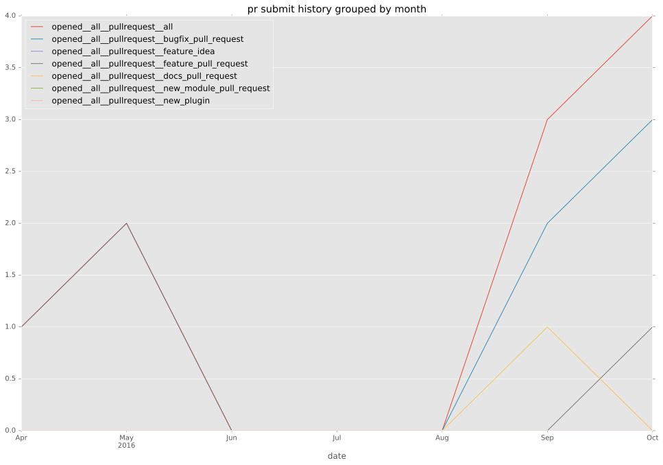

authors
- privateip
- ogenstad
maintainers
- gundalow
- privateip
contributors
- privateip : 69 commits
- ogenstad : 31 commits
- gundalow : 2 commits
total issue counts
bugfix pull request: 8
pullrequest: 9
issue: 1
new plugin: 1
bug report: 1
issue history
pullrequest history


days open by issue type
all
count: 18
std: 14.8755183356
min: 0
max: 46
median: 0.0
mean: 5.11111111111
pullrequest
count: 0
std: nan
min: nan
max: nan
median: nan
mean: nan
bugfix pull request
count: 15
std: 0.0
min: 0
max: 0
median: 0.0
mean: 0.0
issue
count: 0
std: nan
min: nan
max: nan
median: nan
mean: nan
new plugin
count: 2
std: 0.0
min: 46
max: 46
median: 46.0
mean: 46.0
bug report
count: 1
std: nan
min: 0
max: 0
median: 0.0
mean: 0.0
closures grouped by total days open